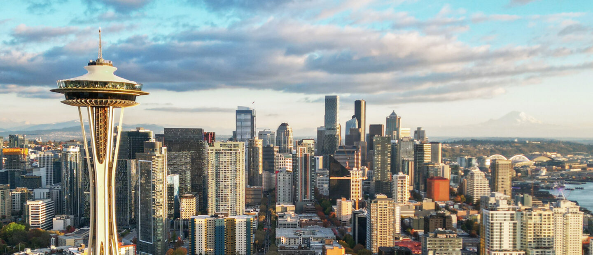

About Seattle
| Population | The population of Seattle as of 2023 is 737,015.[5] |
|---|---|
| Year Incorporated | Seattle was incorporated on December 2, 1869.[6] |
| Region | Seattle is located in the Pacific Northwest region of the United States.Wikipedia: Seattle |
| Classification | Seattle is classified as urban and is the largest city in Washington State.[7] |
| Average Income Level | The average household income in Seattle is $105,391 per year.[8] |

[9]